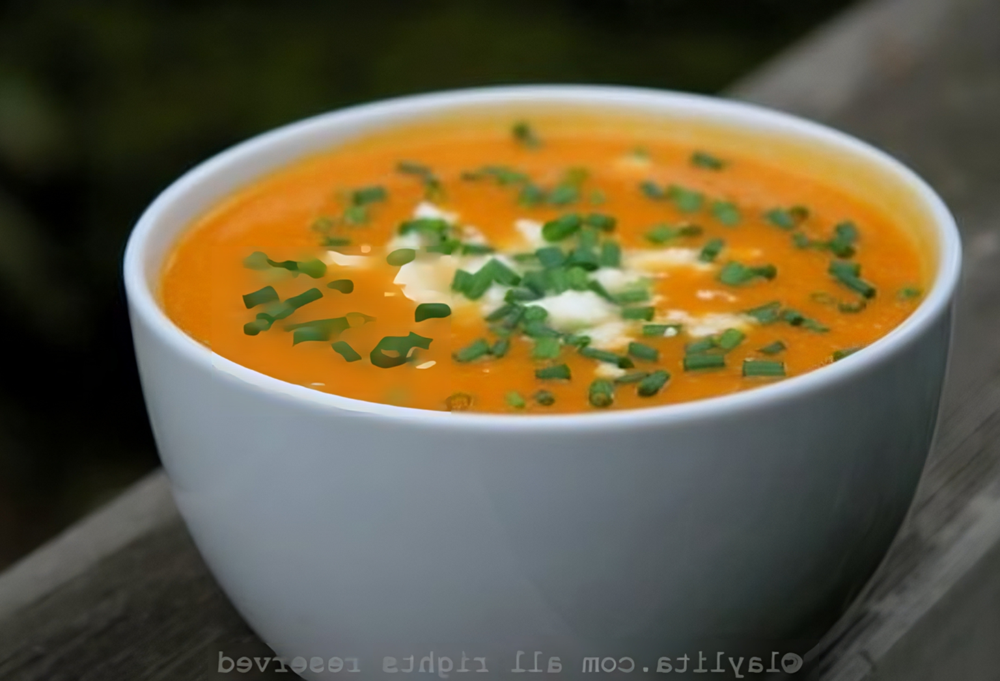

Sopa Crema de Calabaza
Preparación: Lavar y pelar la calabaza, cortarla en trozos grandes.
Colocar una olla con el agua, el laurel, apio, sal y la calabaza; Dejarlo hervir durante 1 hora, procesar y servir.
Preparación: Lavar y pelar la calabaza, cortarla en trozos grandes.
Colocar una olla con el agua, el laurel, apio, sal y la calabaza; Dejarlo hervir durante 1 hora, procesar y servir.